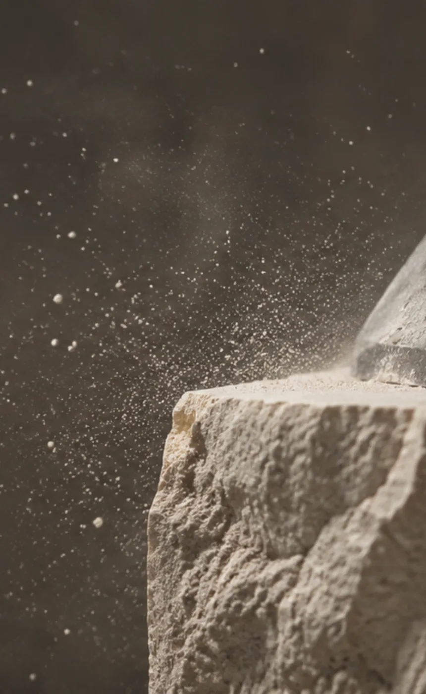
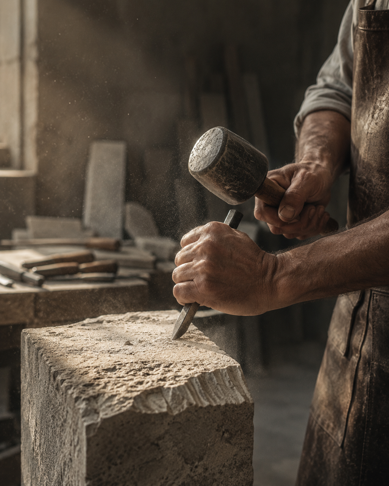

Granit, mramor i prirodni kamen — od odabira ploče do posljednjeg poteza ruke. Radimo za interijere, arhitekturu i spomenike.
Zatraži ponudu →„Kamen ne oprašta greške. Zato mjerimo triput, a režemo jednom."
Klesarstvo Baković
Klesarstvo Baković obiteljska je radionica koja kamen obrađuje već tri desetljeća. Ono što je počelo s ručnim alatom i jednim strojem danas je radionica u kojoj se moderna CNC obrada spaja s klesarskim zanatom koji se ne može programirati.
Svaki projekt vodimo od izmjere na terenu do ugradnje. Bez podizvođača, bez improvizacije — jer kamen pamti svaku odluku.
Ploče se ne biraju s ekrana. U našem izložbenom prostoru možeš vidjeti punu ploču, uzorke završnih obrada i usporediti boje pri dnevnom svjetlu.
Izmjeru i ponudu radimo bez naplate. Javi nam se s dimenzijama, fotografijom prostora ili nacrtom — ostalo je na nama.